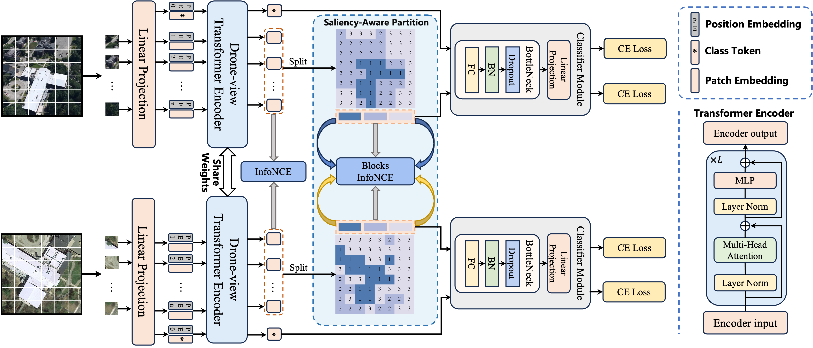
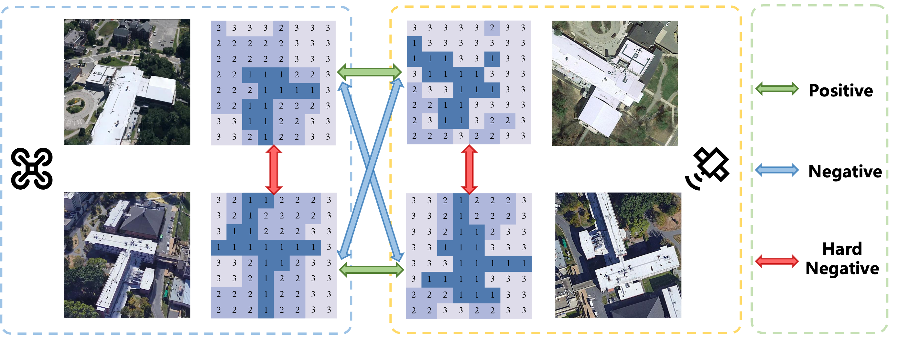
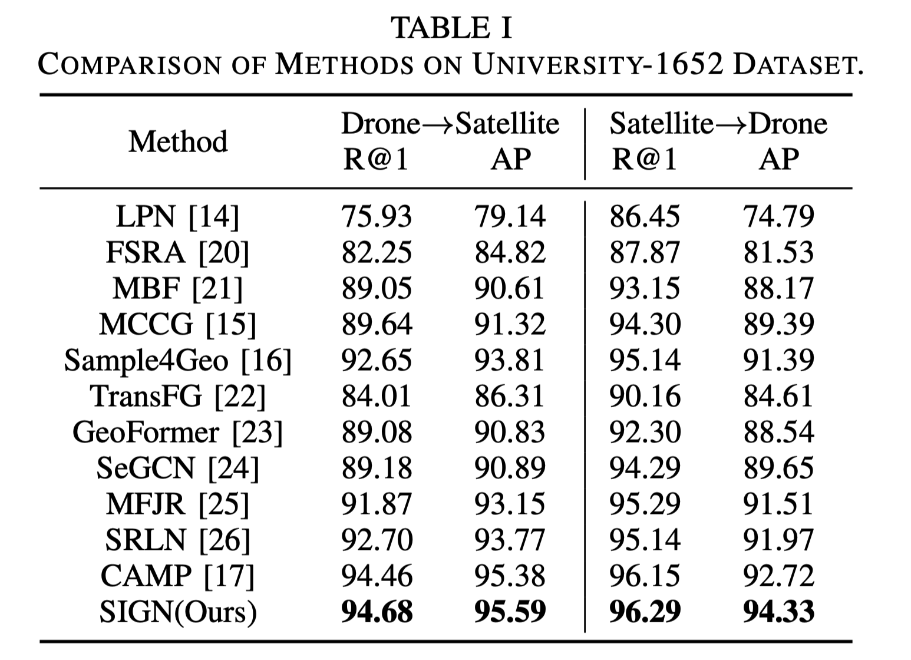
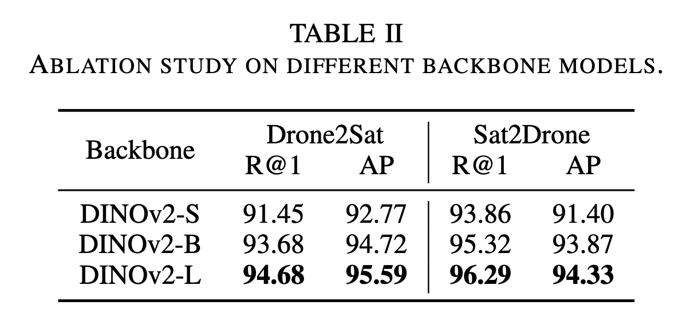
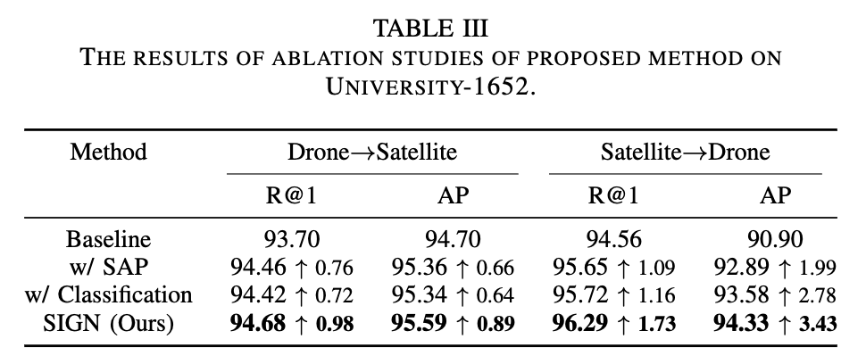

Cross-View Geo-Localization (CVGL) matches images from different platforms, such as UAVs and satellites, to estimate target locations using geographic data. This task poses significant challenges due to viewpoint differences and scale inconsistencies. We propose a novel CVGL method named saliency-aware integrated global-local network (SIGN) to effectively address the viewpoint differences and scale inconsistencies between UAV and satellite images. SIGN employs a transformer-based network for fine-grained feature extraction and utilizes the Saliency-Aware Partition (SAP) module to divide images into key regions for local alignment. The model integrates global feature contrast learning with saliency-aware local block contrast learning to enhance alignment accuracy at both global and local levels. Experiments on the University-1652 dataset show that SIGN achieves state-of-the-art performance, demonstrating superior accuracy and robustness in handling viewpoint variations.

Overview of the proposed SIGN. SIGN consists of three main components: a transformer-based feature extraction network, the SAP module, and a Classification module. It processes paired UAV and satellite images, extracts global features, divides images into key regions for local alignment, and classifies both global and local features to enhance feature matching precision.

We present a quantitative comparison of different methods on the University-1652 datasets, evaluating them in terms of various metrics. The performance of the proposed SIGN was evaluated on the University-1652 dataset, and the results are summarized in Table I. SIGN achieved the best performance in both the Drone → Satellite and Satellite → Drone tasks, demonstrating superior accuracy and robustness in handling viewpoint variations. The results indicate that the proposed method effectively addresses the challenges of scale discrepancies and viewpoint differences in CVGL tasks, significantly improving feature alignment and localization accuracy.

To evaluate the impact of different backbone models on the performance of SIGN, we conducted ablation studies using different sizes of the DINOv2 model. The results are summarized in Table II. The results indicate that the performance of SIGN improves with the size of the DINOv2 model. The DINOv2-L backbone achieves the best results, demonstrating the importance of using a powerful feature extraction network for CVGL tasks.

To evaluate the impact of the SAP module and the Classification module on the performance of SIGN, we conducted ablation studies by adding these components to the baseline one at a time. The results are summarized in Table III. The results indicate that both the SAP module and the Classification module contribute to the performance of SIGN in CVGL tasks. The SAP module enhances the model's ability to capture and align local features, addressing the challenges of scale variations and viewpoint discrepancies. The Classification module further improves the model's discriminative power by leveraging semantic information, facilitating more accurate cross-view localization. The removal of either module causes a marked reduction in performance, highlighting the essential contribution of these components to the precision and efficacy of CVGL tasks.

BibTex Code